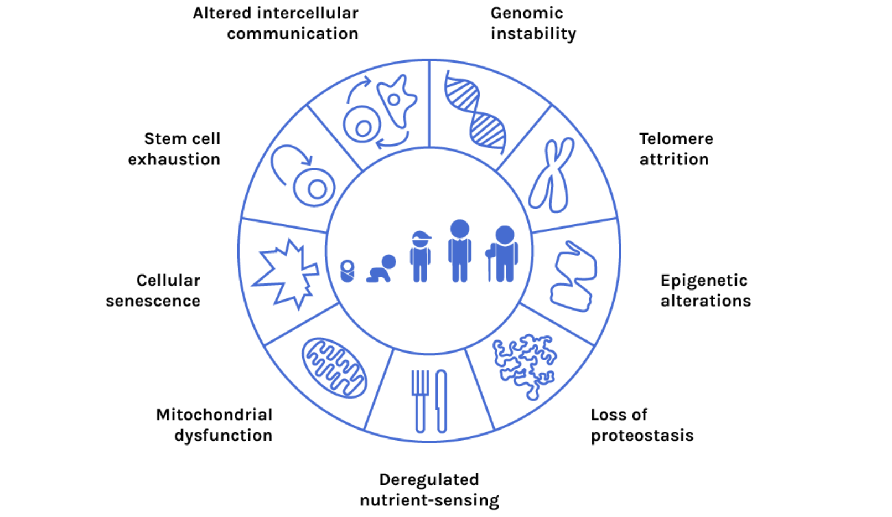

Slowing and partial reversal of human aging
Humans are made of molecular machines which break down over time. As our ability to manipulate biology increases, so too will our ability to keep the machinery in good working order. By the middle of this century, advances in small molecular drugs, cell therapies, and gene therapies will give us increasing power to intervene in the fundamental aging process shown below.
Cell. 2013 Jun 6; 153(6): 1194–1217
Interventions into the fundamental causes of aging will have more impact than simply treating disease. By keeping our cellular machinery in good working order, we’ll reduce the fundamental rate of aging, and the rates of all age-related diseases.
You can read more at our blog in our overview of aging.